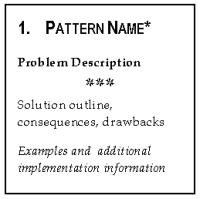
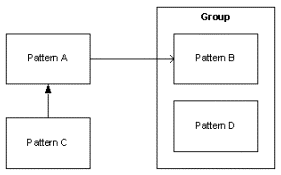

The patterns in this pattern language use a form similar to the one used by Alexander in his book A Pattern Language (see [CA} in Resources). All patterns are written in the you-form, thus directly talking to you, the teacher. In addition to the pattern name, each pattern is divided into three sections. The first section describes the problem and the forces. The second section (below the diamonds) outlines the solution to the described problem as well as the consequences, limitations, and disadvantages. The third section provides examples and additional information on implementing the pattern. References to other patterns in this language are printed in CAPITAL LETTERS.
In addition, each pattern is marked with zero, one or two asterisks (*), as in Alexander's patterns, they show how "alive" we believe the pattern is.
Two asterisks denote patterns that state invariants. We believe that these patterns are essential and that the associated problem cannot be solved in a significantly different way. One asterisk means that we think that we are on the right track, but there might be room for improvement of the patterns. For patterns with no asterisk we are sure that there are other, perhaps better ways of solving the problem, but we have not yet found them.
This section describes the pattern language itself, which is built from the single patterns. The pattern language is divided into different phases, each beginning and ending with a checkpoint. The following is an overview of the language, assuming that you are assigned to run a seminar on a given topic with a defined audience.
The first task is to prepare the seminar by structuring the contents and creating a comfortable environment in which to teach. This phase defines the foundation that is needed to execute a successful seminar.
You are now ready to start the seminar. The participants arrive. You should welcome the participants, create a comfortable atmosphere and make room for personal communication. This phase is important from a social point of view.
The sessions begin. You have to arrange your teaching in a suitable manner by giving overviews, summaries, et cetera. You should teach the content in a way that is accessible for the participants. You should include exercises that reinforce the content. There are rules to follow for you as a teacher.
Now that the teaching is over and the participants have successfully learned the required topics, it is time for the exam.
The seminar is over and it is time to look back.
In the map that follows below, the following symbology is used (see sketch below):
Pattern A must be implemented successfully before Pattern B can be implemented. This describes a kind of temporal ordering. Pattern C is a way to implement Pattern A. It could also be seen as a kind of specialization. Patterns B and D share a common context and are therefore grouped.
Next: Map